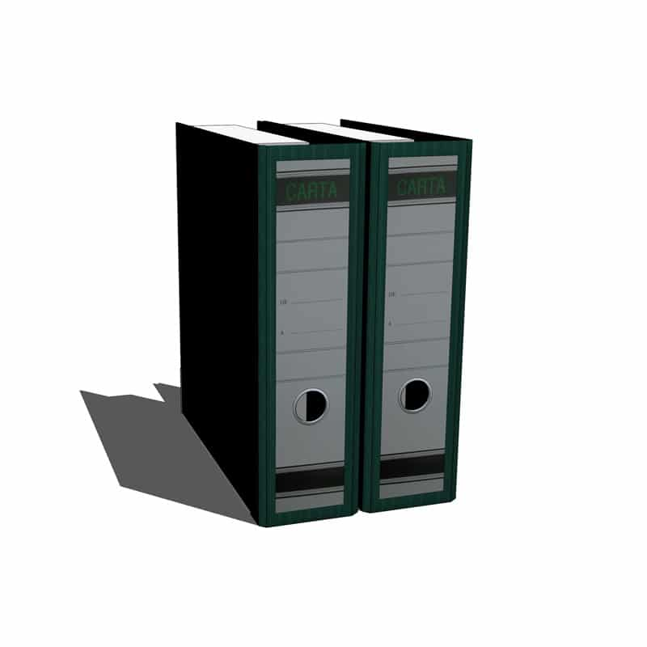
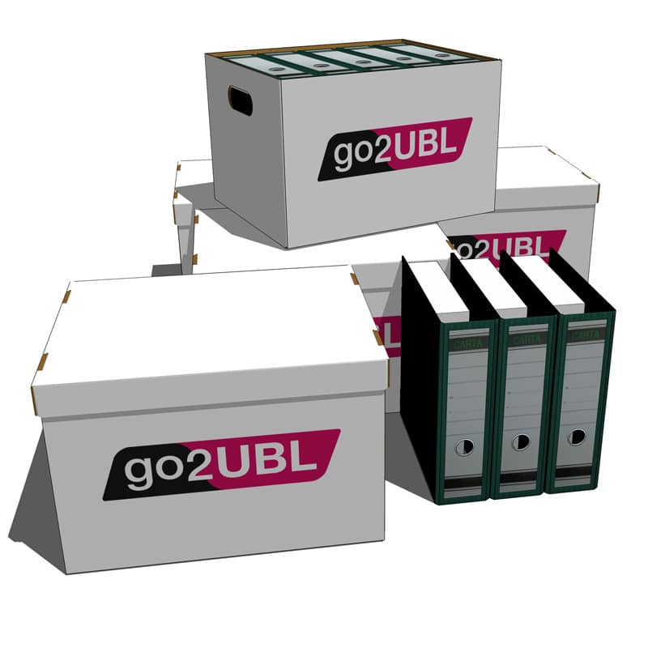
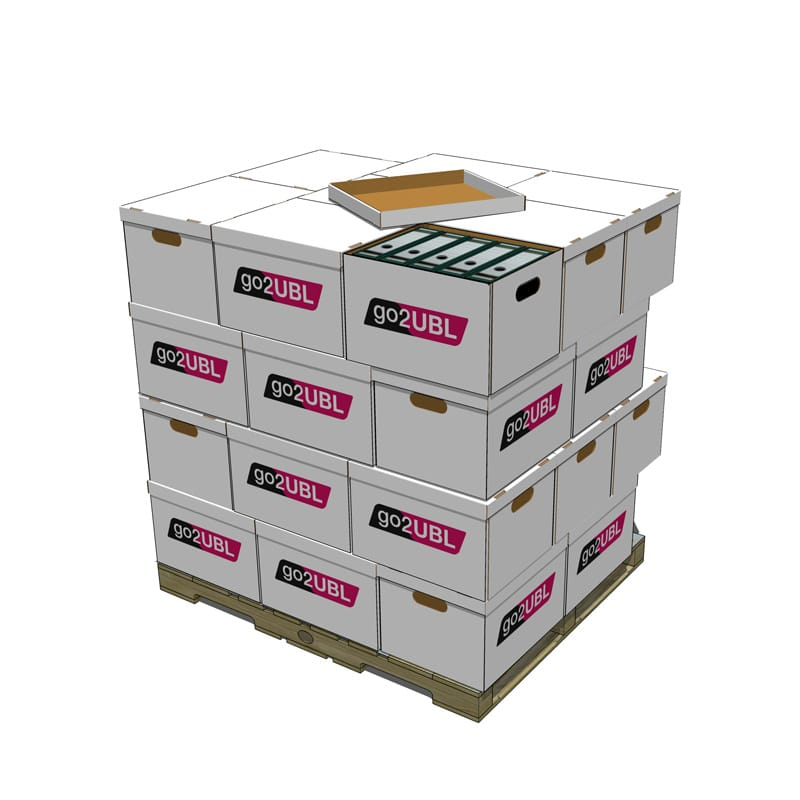
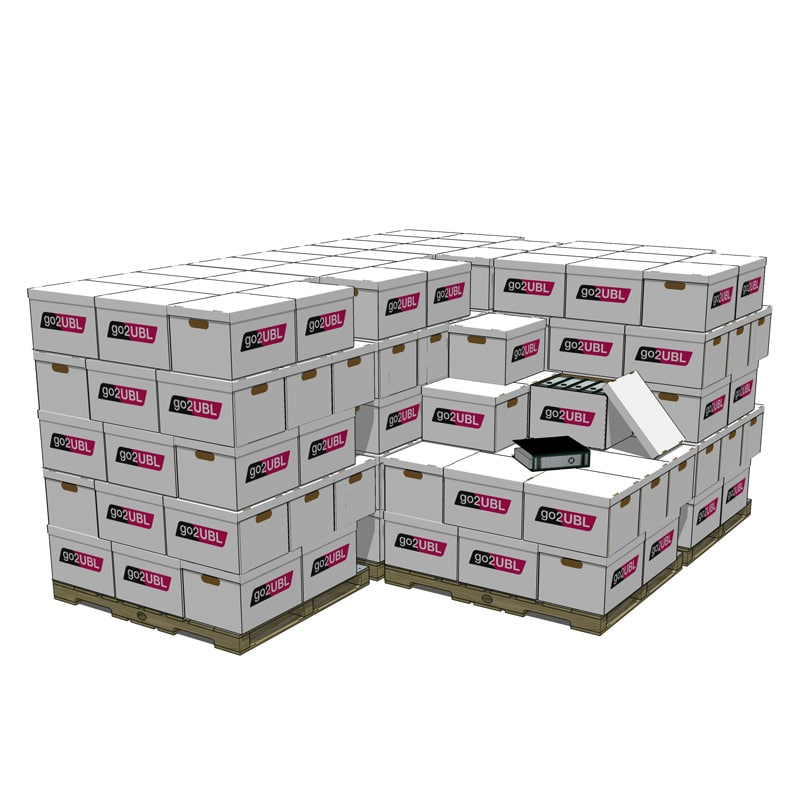

go2UBL
PDF versturen om e-factuur in UBL te ontvangen!Meld je direct aan en krijg 100 GRATIS TRIALS
(de 100 gratis trials zijn 21 dagen na aanmelding geldig)

Geen opstartkosten
De implementatietijd is slechts enkele minuten. Anders dan de meeste andere partijen rekenen wij geen opstartkosten.
Onafhankelijk
Geen overkoepelende organisatie. Geen verplichtingen of aanpassingen van werkwijze. Nog mooier is het feit dat go2UBL volledig onafhankelijk is.
100% volledig
Wij garanderen een 100% volledig herkend document. Hoe kan dat? Documenten verlaten pas ons platform als de herkenning 100% is.go2UBL in het nieuws:
28-09-2020 - Veel boekhouders weten nog altijd niet wat UBL is
Accountancy van mogen - Veel boekhouders weten nog altijd niet wat UBL is
De online dienstverlener go2UBL claimt het domein UBL en start een campagne om het begrip UBL bekender te maken. Volgens het bedrijf dat in- en verkoopdocumenten omzet naar UBL zijn er nog altijd veel mensen die niet bekend zijn met het doel en nut van UBL.
16-12-2019 - Sterk groeiend go2UBL koppelt met alles-in-één software Logic4
Accountantsweek - Sterk groeiend go2UBL koppelt met alles-in-één software Logic4
Gebruikers van ERP & E-commerce software Logic4, kunnen sinds kort gebruik maken van de voordelen van het omzetten van papier- en PDF-facturen naar e-facturen door factuurverwerker go2UBL. Alles-in-één-systeem aanbieder Logic4 ondersteunt hiermee haar gebruikers in het proces naar automatische verwerking van facturen.
Gebruikers van ERP & E-commerce software Logic4, kunnen sinds kort gebruik maken van de voordelen van het omzetten van papier- en PDF-facturen naar e-facturen door factuurverwerker go2UBL. Alles-in-één-systeem aanbieder Logic4 ondersteunt hiermee haar gebruikers in het proces naar automatische verwerking van facturen.
13-02-2019 - De meeste acccorderingssoftware is UBL ready
Softwarepakketten - De meeste acccorderingssoftware is UBL ready
Veel administratieafdelingen en – kantoren maken gebruik van accorderingsmodules of procuratiesoftware om een factuur door meerdere personen te laten beoordelen. Inmiddels zijn de meeste softwaremodules UBL ready. De (pdf-)facturen die zijn omgezet naar e-facturen in UBL- of XML-formaat, kunnen nu direct worden afgeleverd in deze software. Men is daardoor niet langer genoodzaakt om de scan- en herkenoplossing van de module te gebruiken, maar kan een efficiëntieslag maken door in te zetten op kwalitatieve e-facturen.
Veel administratieafdelingen en – kantoren maken gebruik van accorderingsmodules of procuratiesoftware om een factuur door meerdere personen te laten beoordelen. Inmiddels zijn de meeste softwaremodules UBL ready. De (pdf-)facturen die zijn omgezet naar e-facturen in UBL- of XML-formaat, kunnen nu direct worden afgeleverd in deze software. Men is daardoor niet langer genoodzaakt om de scan- en herkenoplossing van de module te gebruiken, maar kan een efficiëntieslag maken door in te zetten op kwalitatieve e-facturen.
24-09-2018 - go2UBL lanceert factuurherkenning op regelniveau
Accountantsweek - go2UBL lanceert factuurherkenning op regelniveau
Waar de automatische verwerking van e-facturen in veel branches een effectieve tijd- en kostenbesparende oplossing is gebleken, kon je als ondernemer in de logistieke sector nog niet optimaal van de facturatievoordelen genieten.
Waar de automatische verwerking van e-facturen in veel branches een effectieve tijd- en kostenbesparende oplossing is gebleken, kon je als ondernemer in de logistieke sector nog niet optimaal van de facturatievoordelen genieten.
27-07-2018 - go2UBL komt met herkennen facturen op regelniveau
Accountancy van Morgen - go2UBL komt met herkennen facturen op regelniveau
Softwareleverancier go2UBL biedt vanaf nu ook de mogelijkheid om facturen op regelniveau te converteren. Deze functionaliteit is vanaf nu – voorlopig als BETA – beschikbaar.Bij de herkenning zoals die nu geboden wordt tot op regelniveau herkend: – Artikelnummer – Omschrijving – Aantal – Prijs per eenheid – BTW11-06-2018 - go2UBL in "hall of fame" internet.nl
Accountancy van Morgen - go2UBL in "hall of fame" internet.nl
Factuurverwerker go2UBL heeft een 100% score gehaald in de websitetest op Internet.nl. Dat betekent dat het bedrijf werkt met moderne internetstandaarden. Hierdoor heeft go2UBL een plaats bemachtigd in de ‘Hall of fame’ van dit initiatief van het Platform Internetstandaarden.
Factuurverwerker go2UBL heeft een 100% score gehaald in de websitetest op Internet.nl. Dat betekent dat het bedrijf werkt met moderne internetstandaarden. Hierdoor heeft go2UBL een plaats bemachtigd in de ‘Hall of fame’ van dit initiatief van het Platform Internetstandaarden.
21-02-2018 - Buitenlandse e-facturen matchen met bank- of BTW-gegevens
Accountancy van Morgen - Buitenlandse e-facturen matchen met bank- of BTW-gegevens
Het lastige van buitenlandse facturen is dat ze niet aan een KvK-nummer te koppelen zijn. Go2UBL lost dat volgens directeur Rob Tolstra, als eerste aanbieder op door ze te koppelen aan bankgegevens of BTW-nummers. ‘Wij leveren met buitenlandse facturen standaard het IBAN-, BIC- en BTW-nummer mee, waarmee een boekhoudprogramma de factuur automatisch herkent’, aldus Tolstra.
Het lastige van buitenlandse facturen is dat ze niet aan een KvK-nummer te koppelen zijn. Go2UBL lost dat volgens directeur Rob Tolstra, als eerste aanbieder op door ze te koppelen aan bankgegevens of BTW-nummers. ‘Wij leveren met buitenlandse facturen standaard het IBAN-, BIC- en BTW-nummer mee, waarmee een boekhoudprogramma de factuur automatisch herkent’, aldus Tolstra.
19-02-2018 - Ontvangen van e-facturen nog verre van gangbaar
Accountantweek - Ontvangen van e-facturen nog verre van gangbaar
Uit een onderzoek van go2UBL naar factuurverwerking onder haar klanten, blijkt dat minder dan 2% van de binnenkomende facturen op dit moment elektronisch is. Elektronische facturen worden aangeleverd in een standaardopmaak waarmee ze geschikt zijn voor automatische verwerking.
Uit een onderzoek van go2UBL naar factuurverwerking onder haar klanten, blijkt dat minder dan 2% van de binnenkomende facturen op dit moment elektronisch is. Elektronische facturen worden aangeleverd in een standaardopmaak waarmee ze geschikt zijn voor automatische verwerking.
10-01-2018 - 100% geautomatiseerde factuurverwerking dankzij koppeling go2UBL
Storecove - 100% geautomatiseerde factuurverwerking dankzij koppeling go2UBL
Storecove beschikt nu over 100% geautomatiseerde factuurverwerking dankzij koppeling met go2UBL. De toevoeging van een slimme inbox, die facturen uit e-mails doorstuurt naar de boekhouding, maakt daarbij volledige e-facturatie mogelijk.
Papieren facturen en PDF-bestanden worden doorgestuurd naar go2UBL, geconverteerd naar UBL en via Storecove automatisch verwerkt in het boekhoudpakket.
Storecove beschikt nu over 100% geautomatiseerde factuurverwerking dankzij koppeling met go2UBL. De toevoeging van een slimme inbox, die facturen uit e-mails doorstuurt naar de boekhouding, maakt daarbij volledige e-facturatie mogelijk.
Papieren facturen en PDF-bestanden worden doorgestuurd naar go2UBL, geconverteerd naar UBL en via Storecove automatisch verwerkt in het boekhoudpakket.
27-10-2017 - Extendas maakt factureren nog gemakkelijker met behulp van go2UBL
TankPro - Extendas maakt factureren nog gemakkelijker met behulp van go2UBL
Gebruikers van het Extendas-pakket FuelOffice kunnen sinds kort gemakkelijker facturen verwerken. De softwareleverancier uit Enschede is namelijk sinds kort UBL Ready gekwalificeerd. UBL staat voor Universal Business Language en is de voorgeschreven standaard voor elektronische facturen. Bij een dergelijke factuur is het aantal handelingen om het document te verwerken, drastisch verminderd.
Gebruikers van het Extendas-pakket FuelOffice kunnen sinds kort gemakkelijker facturen verwerken. De softwareleverancier uit Enschede is namelijk sinds kort UBL Ready gekwalificeerd. UBL staat voor Universal Business Language en is de voorgeschreven standaard voor elektronische facturen. Bij een dergelijke factuur is het aantal handelingen om het document te verwerken, drastisch verminderd.
11-10-2017 - Waarom elke slimme accountant in 2018 over gaat stappen op UBL
Accountancy van Morgen - Waarom elke slimme accountant in 2018 over gaat stappen op UBL
Accountants die zich de komende maanden weer gaan oriënteren op het nieuwe jaar doen er goed aan om UBL mee te nemen in de overwegingen. Deze ontwikkeling is het afgelopen jaar veelvuldig onderwerp van gesprek geweest. Niet gek, want de automatische verwerking van zowel in- als verkoopfacturen levert niet alleen gemak en efficiëntie, maar biedt tevens de mogelijkheid tot flinke groei.
Accountants die zich de komende maanden weer gaan oriënteren op het nieuwe jaar doen er goed aan om UBL mee te nemen in de overwegingen. Deze ontwikkeling is het afgelopen jaar veelvuldig onderwerp van gesprek geweest. Niet gek, want de automatische verwerking van zowel in- als verkoopfacturen levert niet alleen gemak en efficiëntie, maar biedt tevens de mogelijkheid tot flinke groei.
Afgelopen uur

Afgelopen dag

Afgelopen week

Afgelopen maand
Wat is een UBL factuur?
UBL staat voor Universal Business Language. Het geeft in bestandsvorm de inhoud van een factuur weer. Dit wordt een e-factuur genoemd. Het is feitelijk niets meer dan een serie afspraken over een digitale gegevensstructuur in een bepaald standaardformaat, welke inmiddels wereldwijd bekend is. Hierdoor kan ieder softwarepakket, dat zich aan dit standaardformaat houdt, facturen inlezen waardoor deze automatisch worden geboekt.- Accountants- en administratiekantoor
- Midden- en Kleinbedrijf
- De Grootgebruiker
Accountants en administratiekantoor
Zou het niet geweldig zijn als klanten hun inkoopdocumenten direct naar jou zouden doorzetten, zodat er continue een actueel inzicht ontstaat in hun financiële situatie? Dit scenario van continuous monitoring kan werkelijkheid worden met go2UBL.Ons systeem maakt het mogelijk om met één druk op de knop een inkoopdocument om te zetten in UBL-formaat en zo in bijna elk boekhoudprogramma te laten verschijnen. Bovendien levert de werkwijze van go2UBL ook nog eens een aantal andere leuke voordelen op.
Nieuwsgierig? Lees hier meer over de manier waarop het werkt of de andere voordelen van go2UBL.
Midden en klein bedrijf
Ordners vol facturen, bonnen die zoek zijn en altijd stress om alles compleet en op tijd bij de boekhouder te krijgen. Kan dat niet anders? En of dat kan! go2UBL heeft een systeem bedacht dat even eenvoudig als ingenieus is. Hierdoor kun jij jouw inkoopfacturen en bonnen (als PDF) direct naar ons doorsturen per e-mail. Wij zorgen er vervolgens voor dat de benodigde gegevens binnen 24 uur bij jouw boekhouder terecht komen én controleren en passant ook nog een aantal gegevens, zodat bijvoorbeeld dubbele facturen en spookfacturen tot het verleden behoren.Nieuwsgierig? Lees hier meer over de manier waarop het werkt of de andere voordelen van go2UBL.
De grootverbruiker
Wil jij optimaal gebruikmaken van e-factureren, maar je krijgt niet al je leveranciers zover dat zij de facturen op de juiste wijze bij jou aanleveren? Dan is go2UBL voor jou de oplossing. Tevens kun je met go2UBL de losse kas- en pinbonnen alsmede de declaraties van je werknemers omzetten in UBL formaat. Gemiddeld binnen 1 uur worden de benodigde gegevens (PDF + UBL) afgeleverd op jouw eigen server, in jouw boekhoudpakket of bij een service provider waar je aan gekoppeld bent.Lees hier meer over de manier waarop het werkt voor jou als grootverbruiker en de andere voordelen van go2UBL voor jouw organisatie.
Voordelen
- Het inkoopdocument wordt automatisch omgezet naar een UBL-code. Dit reduceert de kans op (over)typefouten tot een minimum.
- Het systeem van go2UBL heeft een directe verbinding met de Kamer van Koophandel.
- Spookfacturen van afzenders die bekend zijn bij de Kamer van Koophandel worden door het systeem direct herkend en onderschept.
- Dubbele inkoopfacturen komen niet meer voor doordat het systeem van go2UBL dit direct herkent en signaleert.
- Je hebt realtime inzicht in de kosten van jouw cliënt, wat jouw adviesrol ten goede komt.
- Door de snelle verwerking in het softwarepakket houd je meer tijd over voor persoonlijk advies.


Hybride model bij e-facturatie goed werkbaar
21-11-2017- Sandra Alkema
Hybride model bij e-facturatie goed werkbaar
Volledige ondersteuning hybride model bij e-facturatie
In de zoektocht naar een manier om zo efficiënt mogelijk om te gaan met het inboeken van in- en verkoopfacturen, kom je al snel uit bij termen als e-facturatie en UBL. En hoewel automatische verwerking aantrekkelijk klinkt, roept het veel vragen op. Voornamelijk omdat niet UBL, maar PDF nog de standaard is voor het verspreiden van facturen. Toch is dat geen reden om niet met e-facturatie te beginnen.Hybride model hanteren
Een hybride model bij de ontvangst van facturen is heel goed werkbaar.Dat wil zeggen dat het niet uitmaakt hoe een factuur binnenkomt: als papier, foto, PDF of UBL. Belangrijk is dat het uitgaat als UBL. En dat is simpel te realiseren door de diensten van een conversiepartner aan te sluiten.
Gemak voor verzender en ontvanger
Accountants die kiezen voor e-facturatie hoeven klanten niet te verzoeken om facturen in UBL op te sturen. Zij kunnen deze gewoon op dezelfde manier blijven aanleveren. Gemak aan de kant van de verzender dus. En als er een koppeling is gemaakt met een conversiepartner, ondervindt de ontvanger evenveel gemak. De partner zet de facturen, hoe deze ook zijn aangeleverd, om in UBL zodat ze automatisch verwerkt worden in het boekhoudprogramma. Belangrijk is wel om te realiseren dat een conversiepartner niet hetzelfde is als een partij die scan en herken software aanbiedt. Enkel met een conversiepartner kan een volledigheid van 100% gegarandeerd worden. Daarnaast kunnen zij, met de juiste kwaliteitscontroles en validatie-tools, ook de juistheid garanderen.Oplossing voor verdwaalde facturen
De koppeling met een conversiepartner biedt tevens een oplossing voor een veelvoorkomende ergernis: verdwaalde facturen in de inbox. Is een e-mail aangeklikt, dan valt deze niet meer op tussen de rest. Zo kan het weleens gebeuren dat facturen erdoorheen glippen. Een betalingsherinnering kost onnodig tijd en zorgt voor irritatie waar niemand op zit te wachten. Gebruikers kunnen hun mail automatisch doorsturen naar de conversiepartner of de leveranciers van de gebruikers sturen de inkoopfacturen rechtstreeks naar de conversiepartner. De gebruiker ziet de facturen vervolgens automatisch binnenkomen in het boekhoudprogramma. Hierdoor besparen de gebruiker en leverancier tijd, worden ergernissen van niet betaalde of geboekte facturen en bonnetjes voorkomen en wordt een grote kostenbesparing gerealiseerd bij de financiële administratie.Door: Rob Tolstra – CEO go2UBL
« Terug naar overzicht